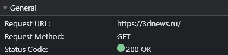

Для разбора выбрал сайт 3dnews.ru
Сайт работает на протоколе https:

Главная страница имеет шапку с логотипом сайта вней отображены текущая дата, информация о сайте, контакты, ссылки на соц. сети, рассылки.
По скольку основная тематика это цифровые технологии, то блоки разделяются по тематикам и по контексту содержимого.
Ключевые новости и обзоры содержат превью с картинками, заголовком и началом текста статьи.
Например: Статья главных новостей дня. Трендовые новости. Блоки новостей по теме "железо" и "софт", с возможостью подписться на рассылку.
Блок обзоров комплектующих, устройств, периферии, игр и прочего. Выделена рестроспектива обзоров.
Так же имеются блоки навигации и поиска по тематикам, блок с настройками отображения страницы - выбора языка и темы оформления. Ссылка на видеоматериалы.
Подвал сайта содержит равовую информацию, контакты и полезные ссылки.
Было/Стало
Больше картинок Меньше картинок